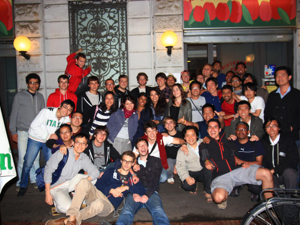

paristechinois
一. 课程 （潘银盈）
•课程介绍
学校官网上有详细的介绍，包括课程概要、考试方式、学时学分等，
技术类课程：http://www.eurecom.fr/fr/les-formations/formation-dingenieur/cursus-24-mois/cours 非技术类课程: http://www.eurecom.fr/fr/les-formations/formation-dingenieur/cursus-24-mois/cours/cours-non-techniques
每个学期都会开新的课程，大家上的课也都不一样，具体每门课难易程度以及老师情况可以到学校后问上一届的学长学姐，大家都会乐意解答的。
•如何选专业（如果有专业的话）各专业名称，及各专业人数分布情况
EURECOM 共有7个专业:
I. Networking
II. Communications systems security
III. Web Engineering
IV. Multimedia
V. Mobile Communications
VI. Transmission Technologies
VII. Real Time and Embedded Systems
这些专业隶属于三个系Networking and security(I,II), Mobile communications(V,VI,VII), Multimedia communications(IV,III), EURECOM的特色专业是security和Mobile，实际上Multimedia的实力也很强。从专业人数分布上看，Communications systems security, Multimedia, Mobile Communications选的人最多，其次是Networking，Web Engineering和Real Time and Embedded Systems选的人很少，Transmission Technologies据说几乎没人选。
个人感觉选专业最重要还是要根据自己的兴趣以及职业规划，很多课程需要做project，如果本科没学过相关基础课程而且又不感兴趣的话，学起来会很吃力。
•如何选课（选什么课程对以后的专业发展比较有用⋯⋯）
哪些课可选哪些课必选？
学校有自己的选课系统，入学时会有专人给大家讲解。每个专业对必修课和选修课的学分都有要求，这个到学校后看学生手册就知道了。
•上课形式（比如一节课多久啊，一般几次课后考试啊，考试形式开闭卷啊之类的）
课程分为长课和短课，长课5学分每周3学时（共42学时），短课3学分隔周上一次或半学期结课（共21学时），每次上两节课，每节课1.5小时，中间休息15分钟。考试形式有开卷也有闭卷，或半开卷（可带1页或2页A4小抄），一般每学期末考试，个别课程还有期中考或有两三次quiz。
•一些跟学校生活相关的网站？（比如查课表啊，学校给的邮箱啊，下课件啊等等）
这个入学时IT部门的工作人员会给大家培训，比如如何使用学校内网、学校wifi、打印机，在家如何远程访问学校内网等。
2.活动(彭亚芬)
•宿舍的活动（所住的宿舍楼是否有些活动⋯⋯）
Telecom ParisTech尼斯校区（eurecom），9+9过来的同学很少能申请到学校的宿舍，都是自己在山下租的房子，基本上都是分布在antibes，cannes，nice。据住在宿舍的master说，山上的宿舍的生活还是比较单调无味的。自己租房子当然就看个人自由活动，自己安排了。
•社团介绍（体育的，文艺的，跟企业联系的等等⋯⋯）
Eurecom这边社团就BDE和BDS。BDE主要负责组织一些soiree，迎接新生，毕业旅行，毕业典礼等活动。BDS主要负责组织一些体育活动，最大的活动是一年一度的滑雪。其他的活动就是BDS的成员联系商家，组织一些团体hiking，划船，沙滩排球等活动。
•soirée（谈谈你们学校soirée的频繁程度啊，在soirée都干些什么）
一个学期三四次吧。因为学校场地限制，所以soiree一般是在同学的villa或者附近的bar。在同学家的soiree有时候参加可能需要交一定的费用，算是给主办者的赞助吧。在bar的话，也是自付酒水啦。可能不同的soiree会有不同的主题，但是内容大都比较单一，就是喝酒，聊天，跳舞，吃东西了，呆久了会觉得有点无聊。但是如果抱着多认识些朋友，多说说话，多了解些欧洲文化生活或者课余放松放松的态度， soiree自然是很好的机会。参加soiree有个比较重要的就是交通问题，自己有车自然是最好。若是自己没有车，只能是提前联系有车的同学搭顺风车去，然后再搭顺风车回来。在同学家的soiree，他们大都是很热情，要是你没有车，他们很乐意让你晚上住他们家，第二天白天再乘公交回去。
•学校传统活动（parrainage等等⋯⋯）
新生入学时的wei，一般是开学的第一个周末；
BDE服务周：刚上任的BDE会宣传一下自己，会在刚上任的第一周的中午或者break，提供点心，组织游戏之类的活动。
滑雪，一般是12月中旬的某个周末；
international meal各国同学做自己国家的特色菜，3月初；
promo trip，4月复活节假期，有企业赞助，每个人只需要付一半的费用。
Diploma ceremony。9月中旬。为当年毕业的同学举办。
3.找实习（最好分专业写，找实习的途径，能找到什么样的实习⋯⋯）
李骞睿（Mobile communication track）：
找实习途径有三个：
1. eurecom database
如果比较懒自己不太想费很多时间，最好的途径就是在eurecom database 上找。 这个数据库由老师管理，平时不开放，仅对eurecom学生在其找实习的学期开放。
优点: 1.简洁，直接在database 平台上提交cv 和lettre de motivation，会有专门负责实习的老师帮忙直接向hr递申请。
2.进入面试几率很高（大部分公司和学校有直接联系）。
3.实习都是学校审查过的，不会不能valider。
4.除了公司的实习项目外，还有在大学或者研究机构的实习项目（John Hopkins university, university of south California, 澳大利亚的一个研究所，都灵理工的一个研究所。。。 ）
缺点：
1. 公司大部分为法国公司，少数英国（只针对持EU护照的学生），爱尔兰，德国，瑞士，美国，日本，澳大利亚。
2．实习offer答应之后不能反悔（据负责实习的老师讲的，具体情况没有先例所以不知道）
3. 技术类实习居多，咨询和管理类很少，有志于投行IT的ggjj要自己找啦
公司：
在mobile 方向上，主要公司有：
1. Amadeus
偏system d’informatuque，android或objC开发
2. Orange/orange lab
各种都有，system d’informatuque， android或objC开发，网络层、应用层研究，通信系统研究，偏market等等都有
3. Thales （communication）
system d’informatuque， android或objC开发，网络层、应用层研究，通信系统研究等等
4. St ericsson
system d’informatuque，网络层、应用层研究，通信系统研究，通信IC甚至芯片等等
5. Technicolor
偏system d’informatuque
6. Alcatel-lucent
网络层、应用层研究，通信系统研究，信道，编码，信号处理等等
7.intel （wireless communication）
偏信号处理和MIMO，更多是speech方面的DSP算法和芯片研究
8. NEC
比较杂，ca depend
9. SAP
偏system d’informatuque
总的来说system d’informatuque很多公司要， android或objC开发也很多，尤其是start up company。偏research的主要是上述的大公司。
2．Telecom database
同telecom 巴黎校区，需要telecom paristech用户名密码登陆，其余同巴黎校区的找实习。
3.自己找 - -||
各种渠道：大公司网申，afcp，交大同济校友会，各种中国人在XX群，学长学姐小广告。。。
如果想要去米国的同学，除了eurecom的database外主要还是靠自己找啦。
陈宇洋（Multimedia track）
在法国找实习，学校或者校友的关系是十分重要的，哪怕能力再强，也没有你表现的机会。在EURECOM，学校专门给我们提供了一个实习数据库，里面会提供数百个岗位，由学校统一帮我发简历到找实习的主管那里。这些岗位有些是与学校老师的合作关系而带来的，有些则是原来的校友提供的，虽然算不上十分庞大，但这些岗位都是相对容易进的，至少有面试的机会。相反，自己在外面投的简历多半是音讯全无。
由于这些实习岗位都考虑到EURECOM的特点，所以多数没有法语要求。同时，由于合作的公司长期与学校或者导师有关系，所以这些岗位都比较符合专业的特点，多媒体，信息安全，通信等的领域都有，这都是我们学校所能学到的专业。不过，同样的原因，要找别的专业，譬如金融经济，工业管理之类的，就没有门径了。此外，咨询类不是EURECOM的风格，一来我们基本没有开设这样的课程（不同巴黎TELECOM），二来这个校区的人都不说法语，要进法国咨询公司还是比较困难的。
说明一点的是，虽然我们的数据库的岗位有几百个，但很多都是同一个公司放出来的，所以涉及的范围不能算多。不过数据库还是有不错的国外实习机会，据我所知有英国，日本，德国，美国，澳大利亚，不过都比较少（每年去的不超过10个），也要符合的专业或兴趣，还有工资的期望（有些国外岗位给钱不多）。
4.个人的sentiment（跟法国人的融合程度，对学校的总体评价，以及在这所学校生活学习的一些心得体会，自由发挥啦⋯⋯）（田永超）
来到法国也有了大半年，不知不觉中又到了春天。想到夏令时即将到来，终有一天要少睡一小时，想来真是伤感。
去年这时候还在国内悠哉的学法语，偶尔对这边法国的生活进行下YY。具体的YY内容不记得了，不过总体来说自己对这边还是很满意的。特别我们南法这边，阳光明媚，过着真是“我有一栋房子，面朝大海，春暖花开”的生活。记得刚来这边的时候，学校还没开学，每天早上一边在阳台上吃早饭，一边看海上日出，下午去海滩，既可以下海游泳，又可以看到那么多泳装甚至裸晒的美女。
可惜我们不是来度假的，开学后日子还是略有点苦逼的。每天都要坐40分钟到1个小时左右的公交上山上学，还经常堵车。远没有巴黎的同学方便。到了学校才发现学校原来那么小，一年也就招个不到100人，所谓精英教育嘛。所以学校自然有很多设施也跟不上。首先没有自己的食堂，所以一般有两种选择，自己带饭，或者坐公交去周边一个商校的食堂吃饭。我偏好前者，因为中午习惯小憩一会儿，所以也就练就一手不错的厨艺。学校也没有什么体育设施，不过每周学生会都会组织一些活动，开卡丁车啊，攀岩之类，还都是很不错的。
学校的同学一般都挺nice的，就像这个城市的名字一样，特别是外国学生。法国学生在我看来一般分两类，一种会主动和你说话啊，平时也很活跃，还有一种似乎略显低调，不过学术能力很强，你有问题不懂去问他们，他们也会很热情的帮你讲解。不过想真正和他们法国同学完成打成一片，我觉得还是很有难度的，语言，文化背景等等综合问题。
课程上，总体感觉压力适中，比国内的课程要紧张些，特别是到了期末考试期间（好像在国内也是啊，呵呵）。不过学习的课程内容，我总体感觉还是比国内要实用些的。毕竟这边是工程师教育嘛，不是培养科研人才的，教你那么多的理论知识干嘛。我们这边挺看重编程能力的，所以像我这种EE出身的一开始感觉挺不习惯的。因为老师都是默认你已经掌握java,c++之类编程语言的，上来就各种project，不过这样情况下逼着你去很快的掌握新知识，还是很有效率的。
对于以后的出路，我自身也还没有想得很清楚。有人就留在法国工作了，有人回国，也有人申请去了美国继续深造。哪条路是最适合自己的，也需要各人在这边生活了，慢慢体会吧。不过如果有人像我当年那样在最后的大四觉得迷茫，我倒是很推荐来申请这边的学校。毕竟出来，觉得视野开阔了许多，然后在这个基础下再去规划接下的人生，肯定是百益而无一害的。如果你是立志要走奋斗科研路的，还是不要来这边了，法国人骨子还是有些懒散的，法国也真的不是适宜奋斗的沃土。
当然了，以上意见只是我的个人看法，个人性格比较消极，喜欢吐槽。上文仅供参考~
参与本次访谈的同学有：
潘银盈
彭亚芬
李骞睿
陈宇洋
田勇超
Telecom学生访谈

2012年1月28日星期六